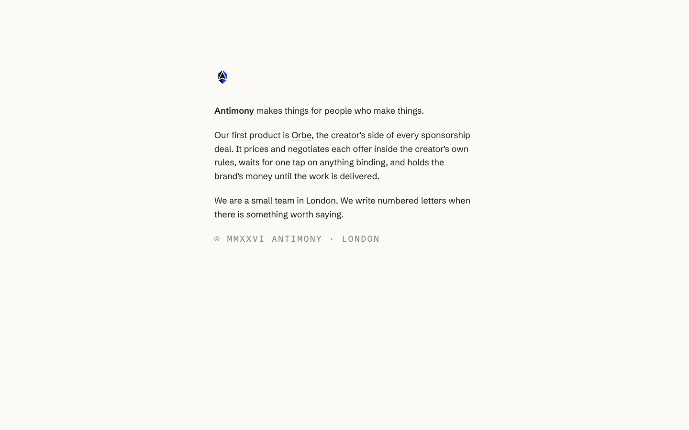
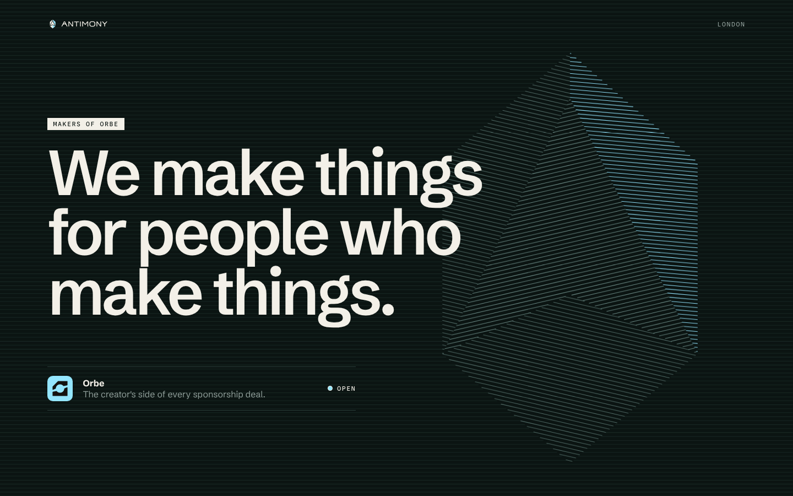
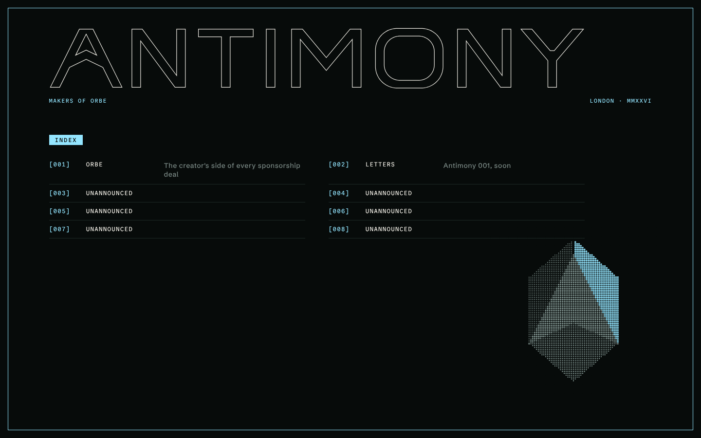
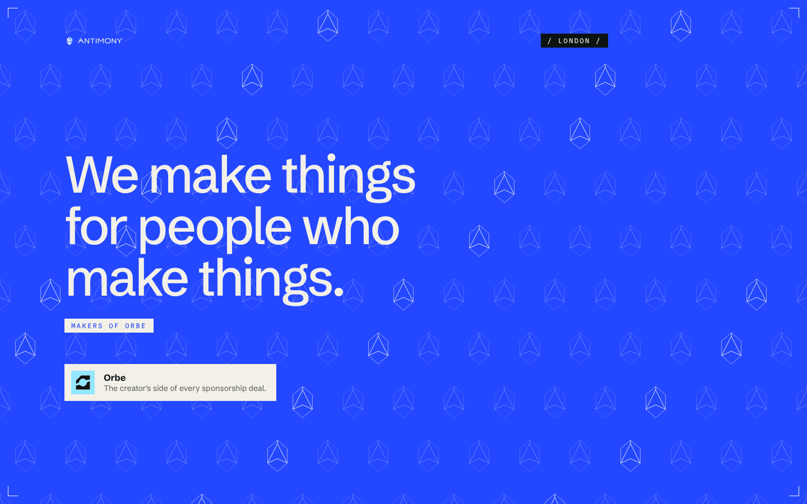
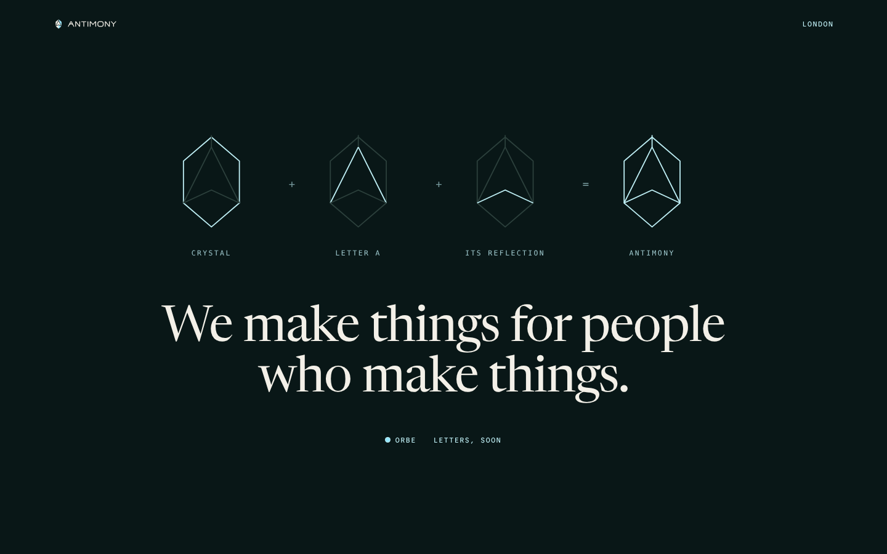
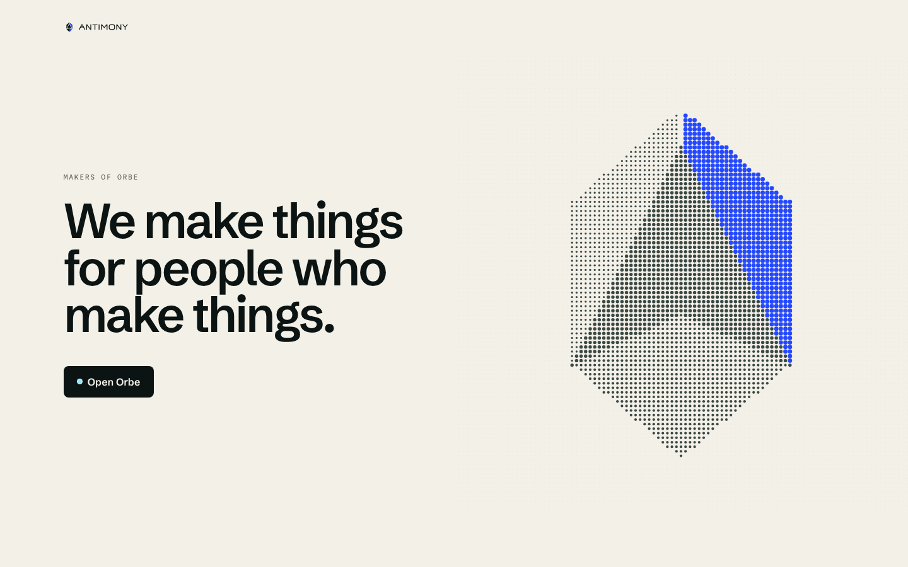
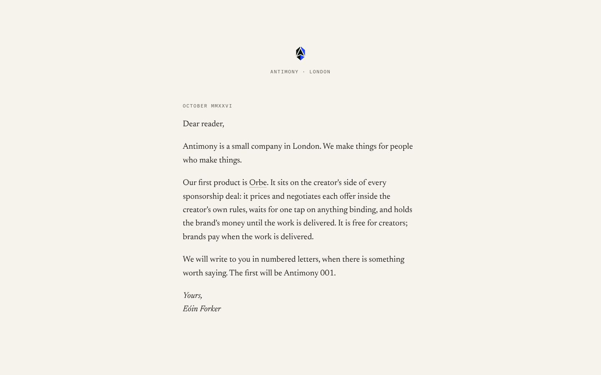
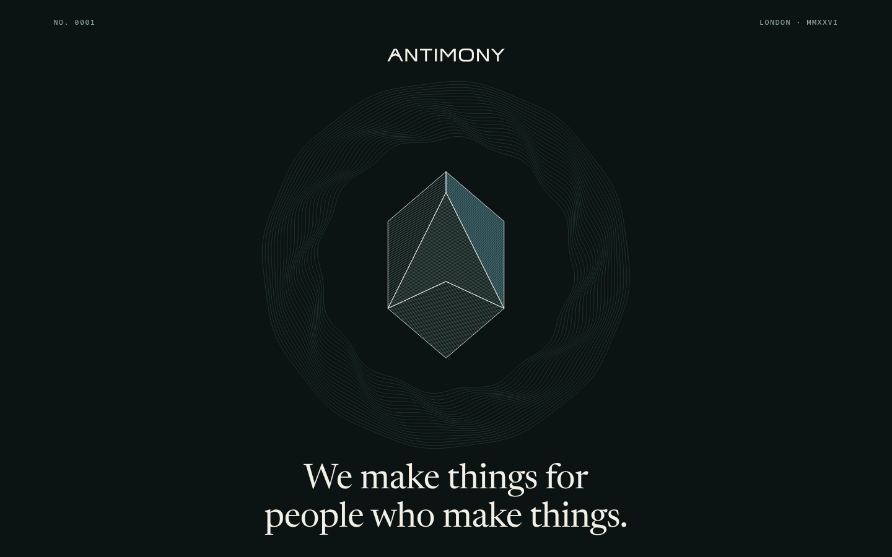
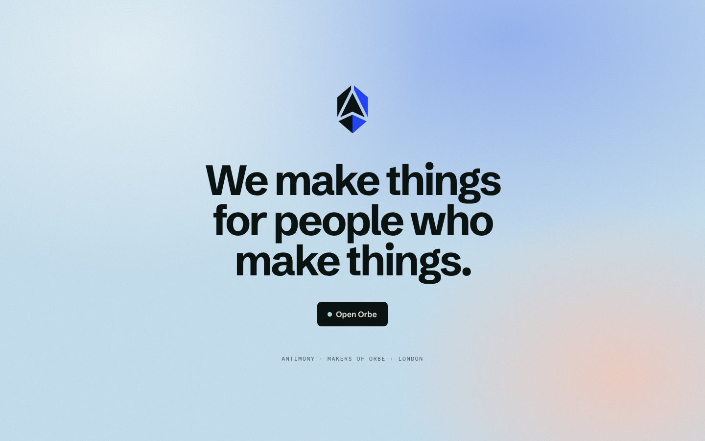
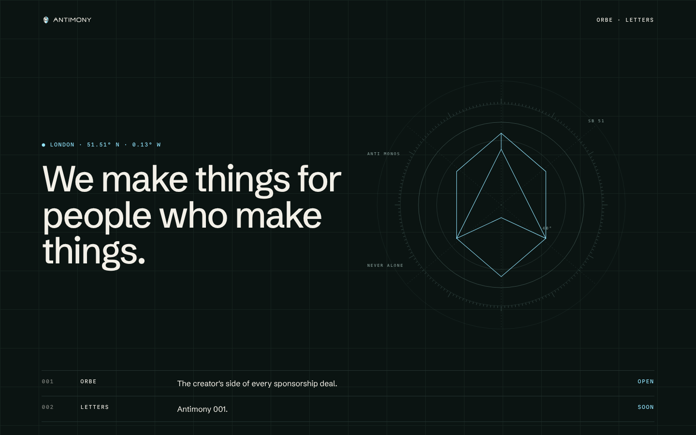

01 · Anysphere: text only
02 · Refraction
03 · Night City magazine
04 · Ambient Media
05 · Perplexity construction
06 · Halftone
07 · A letter
08 · Engraved
09 · Turnover haze
10 · Instrument